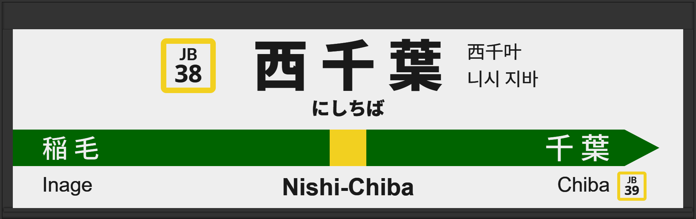

| ←稲毛 | ■ 中央・総武線(各駅停車) | 千葉→ |
|---|
1999年6月に初期型ATOS放送を導入。
2013年3月に常磐改良型に更新される。
2025年6月に1番線の発車メロディが「JR-SH2-1」から「JRE-IKST-003-1」へ、2番線は「JR-SH2-3」から「JRE-IKST-003-2」に変更。
| 1 | ■ 中央・総武線(各駅停車) 三鷹方面 |
1番線接近放送 1番線到着放送 1番線発車メロディ（JRE-IKST-003-1） |
放送は「中野行」です。 |
|---|---|---|---|
| 2 | ■ 中央・総武線(各駅停車) 千葉方面 |
2番線接近放送 2番線到着放送 2番線発車メロディ（JRE-IKST-003-2） |
放送は「千葉行」です。 |
| 1 | ■ 中央・総武線(各駅停車) 三鷹方面 |
1番線発車メロディ（JR-SH2-1） |
発車メロディが「JR-SH2-1」でした。 |
|---|---|---|---|
| 2 | ■ 中央・総武線(各駅停車) 千葉方面 |
2番線発車メロディ（JR-SH2-3） |
発車メロディが「JR-SH2-3」でした。 |
| 1 | ■ 中央・総武線(各駅停車) 三鷹方面 |
1番線接近放送 1番線到着放送 1番線発車メロディ（JR-SH2-1） |
旧型でした。 放送は「立川行」です。 |
|---|---|---|---|
| 2 | ■ 中央・総武線(各駅停車) 千葉方面 |
2番線接近放送 2番線到着放送 2番線発車メロディ（JR-SH2-3） |
旧型でした。 放送は「千葉行」です。 |